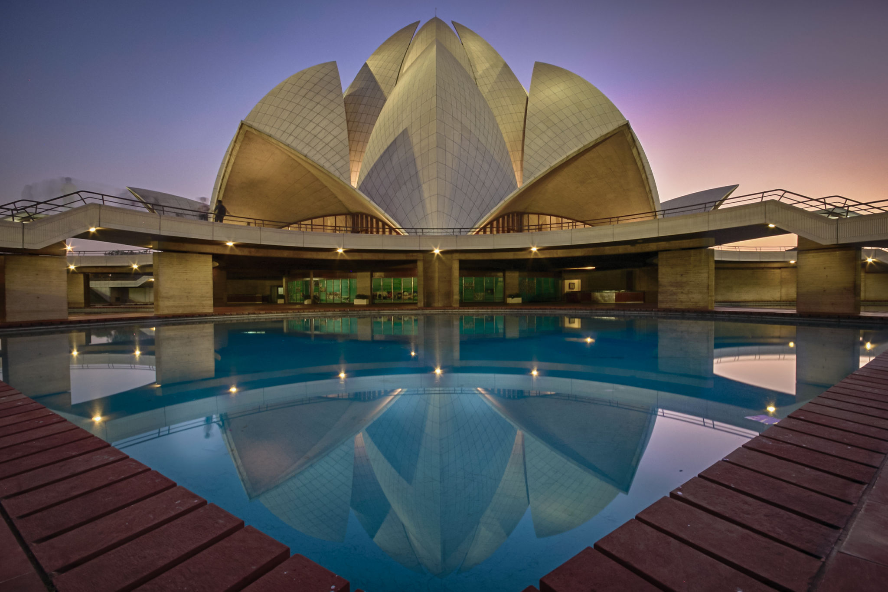

Delhi

My journey began here, in the heart of the capital. Delhi is where I took my first breath, a place of immense history and heritage. Though I was too small to grasp the grandeur of its monuments or the depth of its culture, it remains the starting point of my existence—a vague but significant memory of where it all started.